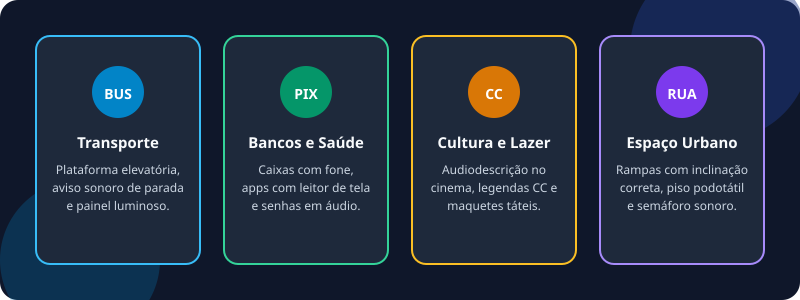
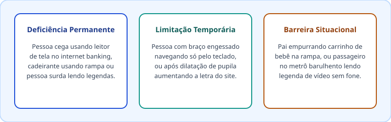

Acessibilidade na Vida Cotidiana: O Direito de Ir, Vir, Comunicar e Participar
Acessibilidade não é um favor nem um detalhe técnico restrito a hospitais ou escolas especiais. Ela está presente no momento em que alguém pega um ônibus para trabalhar, paga um boleto pelo celular, assiste a um filme no cinema ou consulta o resultado de um exame médico.

Figura 1: A acessibilidade conecta o espaço físico e o ambiente digital nas tarefas mais comuns da rotina.
Artigos em Destaque sobre o Cotidiano
Leia nossas reportagens e textos explicativos sobre como barreiras visíveis e invisíveis afetam a rotina das pessoas — e como soluções simples transformam cidades e serviços:
Artigo 1 • Mobilidade Urbana
Do Ponto de Ônibus ao Semáforo: Os Desafios de Circular pela Cidade
Calçadas irregulares, rampas bloqueadas por veículos e ônibus sem aviso sonoro transformam um trajeto de dez minutos em um obstáculo diário para cadeirantes, idosos e pessoas cegas.
Bancos, Farmácias e Consultas Online: Quando a Barreira Está na Tela
Hoje quase tudo passa por aplicativos e sites. Descubra o que acontece quando um caixa eletrônico não tem fone de ouvido ou um aplicativo de saúde não funciona com leitor de tela.
Cinema com Audiodescrição, Museus Táteis e Salas de Aula Inclusivas
O direito ao lazer, à cultura e à educação no dia a dia: como legendas descritivas, intérpretes de Libras e materiais adaptados garantem pertencimento social.
Entenda sem jargões o significado de termos que fazem parte da cidadania: Desenho Universal, Piso Podotátil, Audiodescrição, Libras, Leitor de Tela e Tecnologia Assistiva.
Por que a Acessibilidade Melhora a Vida de Todas as Pessoas?
Na arquitetura e no design de serviços existe o conceito de Desenho Universal: projetar ambientes, produtos e comunicações para que possam ser usados pelo maior número possível de pessoas, sem precisar de adaptações improvisadas de última hora.

Figura 2: Recursos de acessibilidade atendem pessoas com deficiência permanente, limitações temporárias e situações comuns da rotina.
"A deficiência não está apenas no corpo da pessoa; ela surge no encontro entre uma condição humana e um ambiente que não foi pensado para recebê-la."
Quando uma calçada recebe rebaixamento adequado, ela não ajuda apenas quem usa cadeira de rodas: ela garante segurança para pais com carrinhos de bebê, pessoas idosas com andador, entregadores com carrinhos de carga e viajantes com malas. Da mesma forma, legendas em vídeos ajudam pessoas surdas, estudantes aprendendo um idioma e passageiros em transporte barulhento.